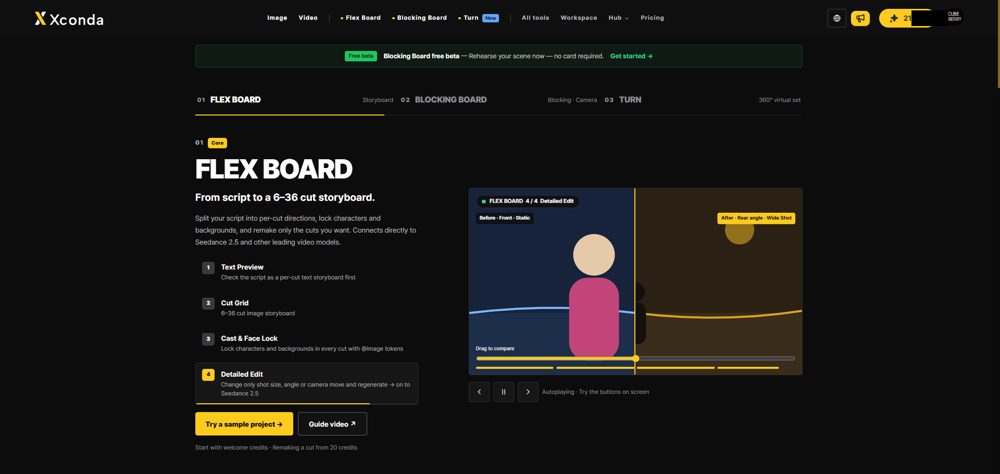
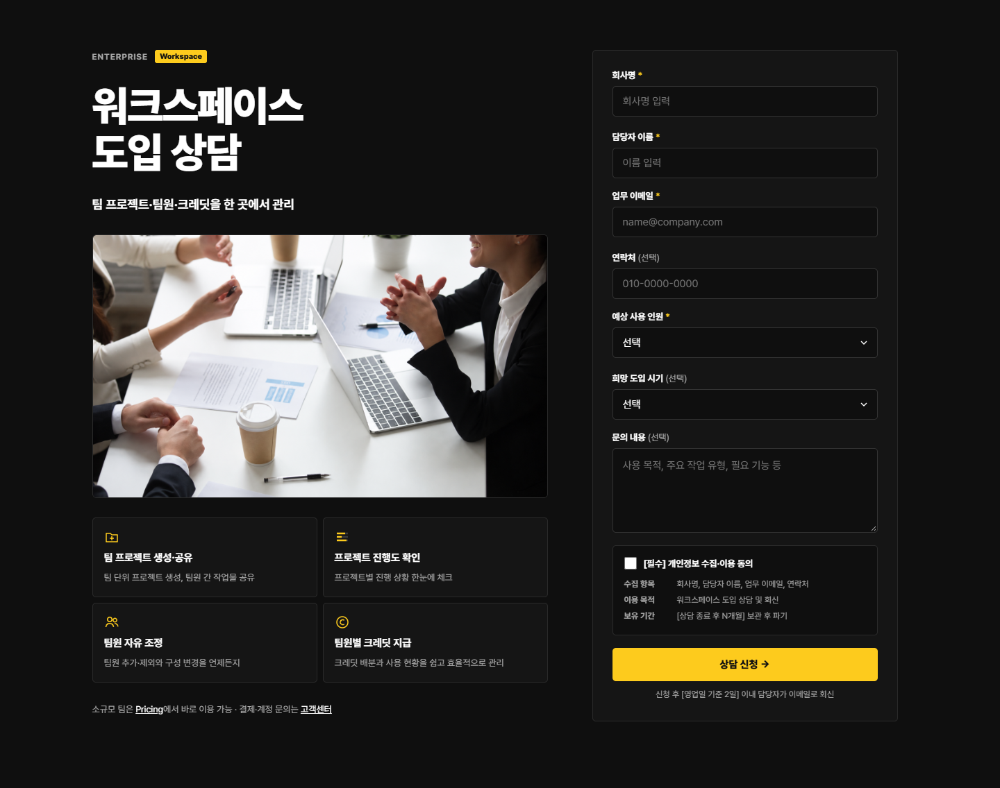
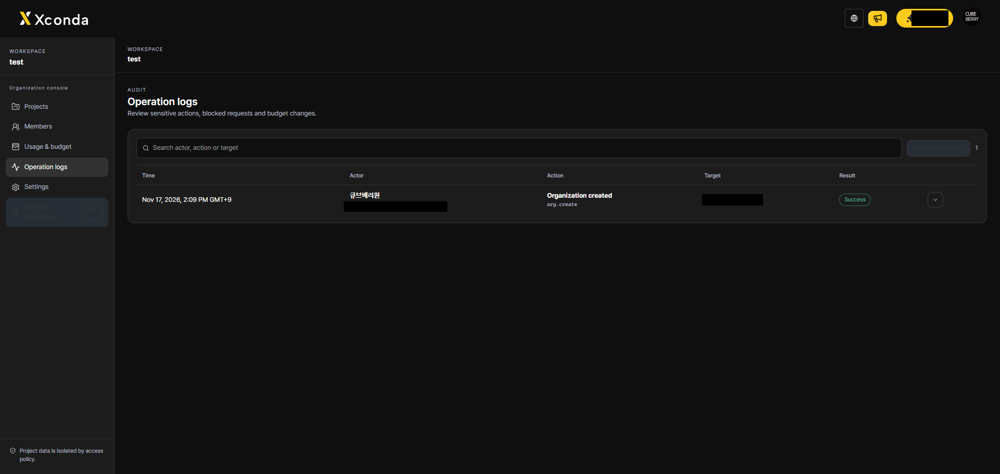
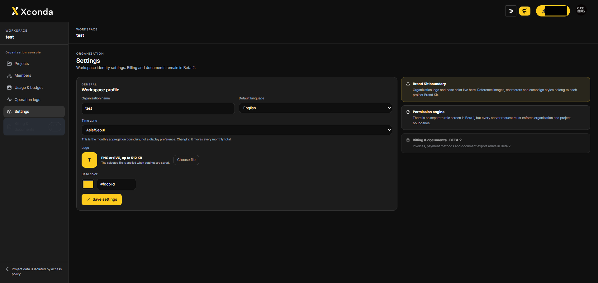

- 워크스페이스 = 팀이 함께 쓰는 방
- 프로젝트 = 일 한 묶음
- 멤버 = 함께 일하는 팀원
- 크레딧 = 엑스콘다에서 쓰는 토큰. 쓸 때마다 줄어듭니다.
- 조직 지갑 = 회사 전체 크레딧을 넣어 두는 큰 지갑
- 예산 = 일마다 나눠 준 크레딧 양
- 관리자 = 방이나 일을 맡아서 정할 수 있는 사람
- Reuse = 이미 만든 것을 다시 써서 이어 만들기
- 베타 (Beta) = 아직 시험 중인 단계. 다 만든 것이 아닙니다.
1. 워크스페이스란
워크스페이스는 팀이 함께 쓰는 방입니다.
혼자 쓸 때와 다릅니다. 팀의 일, 팀원, 크레딧을 한곳에서 볼 수 있습니다.
상담 페이지에도 이렇게 적혀 있습니다. 팀 프로젝트·팀원·크레딧을 한 곳에서 관리.
처음 화면에는 이렇게 나옵니다. Choose a workspace to manage projects, members and budget.
뜻은 이렇습니다. “일, 팀원, 예산을 볼 방을 고르세요.”
| 페이지에 나온 말 | 쉬운 뜻 |
|---|---|
| 팀 프로젝트 생성·공유 | 팀 일을 만듭니다. 만든 것은 팀원과 나눠 봅니다. |
| 프로젝트 진행도 확인 | 일이 얼마나 됐는지 한눈에 봅니다. |
| 팀원 자유 조정 | 팀원을 넣거나 뺄 수 있습니다. 언제든 바꿀 수 있습니다. |
| 팀원별 크레딧 지급 | 크레딧을 나눠 줍니다. 누가 얼마나 썼는지도 쉽게 봅니다. |
| 할 수 있는 것 | 쉬운 설명 |
|---|---|
| 팀 프로젝트 만들기 · 팀원 부르기 | 일 묶음을 만듭니다. 그리고 팀원을 부릅니다. 방에 부르는 것과 일에 넣는 것은 다릅니다. 따로 합니다. 6장을 보세요. |
| 프로젝트 예산 나누기 | 큰 지갑에 있는 크레딧을 일마다 나눕니다. 만들기는 나눠 받은 양 안에서만 됩니다. 예산을 나눠도 크레딧이 새로 생기지 않습니다. 5장과 7장을 보세요. |
| 얼마나 썼는지 보기 | Usage & budget 화면에서 봅니다. 크레딧이 어디서 왔는지 볼 수 있습니다. 어느 일로 갔는지도 볼 수 있습니다. |
| 기록 보기 · 설정 바꾸기 | Operation logs에서 중요한 일의 기록을 봅니다. Settings에서 회사 이름, 언어, 시간, 로고, 기본 색을 바꿉니다. |
| 결과물 나누기 · Reuse | 만든 결과물을 볼 수 있습니다. 내려받을 수도 있습니다. 사진에서 Reuse를 누르면 이어서 만들 수 있습니다. 단, Reuse는 같은 일 안에서만 됩니다. 다른 일로 가져갈 수 없습니다. 밖에 링크로 열 수도 없습니다. Beta 1에서는 안 됩니다. 10장을 보세요. |
Project data is isolated by access policy.라고 나옵니다. 뜻은 이렇습니다. “일마다 볼 수 있는 사람이 정해져 있습니다. 아무나 다 볼 수 없습니다.”
Workspace를 누르면 방으로 갑니다. · 위쪽 개인 크레딧 숫자는 검은 박스로 가렸습니다. 남에게 보이면 안 되기 때문입니다.2. 시작하기 — 먼저 상담을 신청합니다
바로 가입해서 쓰는 것이 아닙니다. 먼저 상담을 신청합니다.
상담 페이지에서 글을 써서 보냅니다. 그러면 답 메일이 옵니다. 영업일 기준 2일 안에 옵니다.
영업일은 회사가 일하는 날입니다. 주말은 세지 않습니다.
페이지 제목은 워크스페이스 도입 상담입니다. 보내는 버튼은 상담 신청입니다.

2-1. 신청하기 전에 준비하기
- 회사 이름을 준비하세요.
- 담당자 이름을 준비하세요.
- 업무 이메일을 준비하세요. 답은 업무 이메일로 옵니다. 꼭 볼 수 있는 이메일을 쓰세요.
- 몇 명이 쓸지 정하세요. 이 칸은 꼭 채워야 합니다.
- 언제부터 쓰고 싶은지 정해 두세요. 없어도 신청할 수 있습니다.
- 묻고 싶은 것을 적어 두세요. 왜 쓰는지 적으면 좋습니다. 어떤 일을 하는지 적으면 좋습니다. 무엇이 필요한지 적으면 좋습니다. 이 칸은 비워도 됩니다.
- 개인정보를 쓰는 데 동의해야 합니다. 동의에 표시하지 않으면 보낼 수 없습니다.
2-2. 신청서에 쓰는 것
| 칸 이름 | 꼭 써야 하나요? | 어떻게 쓰나요? |
|---|---|---|
| 회사명 | 필수 * | 직접 씁니다. 칸에는 회사명 입력이라고 나옵니다. |
| 담당자 이름 | 필수 * | 직접 씁니다. 칸에는 이름 입력이라고 나옵니다. |
| 업무 이메일 | 필수 * | 직접 씁니다. 예: [email protected]. 답이 여기로 옵니다. 틀리게 쓰지 않았는지 꼭 보세요. |
| 연락처 | 선택 | 직접 씁니다. 예: 010-0000-0000. 비워도 됩니다. |
| 예상 사용 인원 | 필수 * | 목록에서 고릅니다. 칸에는 선택이라고 나옵니다. 신청 화면에서 직접 보세요. |
| 희망 도입 시기 | 선택 | 목록에서 고릅니다. 쓰고 싶은 때를 고르면 됩니다. |
| 문의 내용 | 선택 | 직접 씁니다. 칸에는 사용 목적, 주요 작업 유형, 필요 기능 등이라고 나옵니다. |
2-3. 개인정보 동의 — 꼭 표시해야 합니다
신청서 아래에 [필수] 개인정보 수집·이용 동의가 있습니다. 읽고 표시하세요.
| 구분 | 페이지에 나온 말 |
|---|---|
| 무엇을 가져가나요? | 회사명, 담당자 이름, 업무 이메일, 연락처 |
| 왜 쓰나요? | 워크스페이스 도입 상담 및 회신. 즉, 상담하고 답을 보내기 위해 씁니다. |
| 얼마나 두나요? | 개인정보는 상담이 끝난 뒤 1년 뒤에 삭제합니다. |
2-4. 보낸 뒤에 할 일
- 상담 신청 버튼을 누릅니다.
- 기다리세요. 영업일 기준 2일 안에 답 메일이 옵니다.
- 메일이 안 오면 먼저 스팸함을 보세요. 그다음, 이메일을 맞게 썼는지 보세요.
- 돈이나 계정에 대해 물을 것이 있으면 고객센터에 물어보세요.
3. 들어가기 — 고르기, 참여하기, 만들기
로그인하세요. 그리고 xconda.ai/workspace로 가세요. Your workspaces 화면이 열립니다.
뜻은 “내 워크스페이스”입니다. 내가 들어간 방 목록입니다.
3-1. 목록에서 열기
- 방 하나가 카드 하나로 나옵니다.
- 카드에는 방 이름이 나옵니다. 내 역할도 나옵니다. 프로젝트 수도 나옵니다.
- 예:
Administrator는 관리자입니다.0 projects는 프로젝트 0개입니다. - 카드의
Open버튼을 누르세요. 그 방의 관리 화면으로 들어갑니다. 처음에는Projects화면이 열립니다. - 오른쪽 위에는 버튼 2개가 있습니다.
Join workspace와Create workspace입니다.

Your workspaces 화면입니다. 방 카드가 보입니다. Open 버튼도 보입니다. Join workspace와 Create workspace 버튼도 보입니다. · 위쪽 개인 크레딧 숫자는 검은 박스로 가렸습니다.3-2. 새 방 만들기 — Create workspace
Create workspace버튼을 누릅니다.Create a workspace칸이 열립니다.- 거기에는
You become its first administrator.라고 나옵니다. 뜻은 “만든 사람이 첫 관리자가 됩니다”입니다. Organization name에 회사 이름을 씁니다.Create버튼을 누릅니다. 방이 만들어집니다.- 만든 기록은
Operation logs에 남습니다.Organization created라고 나옵니다. 8장을 보세요.

Create a workspace 화면입니다. Organization name을 씁니다. 그리고 Create를 누릅니다. · 위쪽 개인 크레딧 숫자는 검은 박스로 가렸습니다.3-3. 이미 있는 방에 들어가기 — Join workspace
Join workspace 버튼이 있습니다. 이미 있는 방에 들어갈 때 누릅니다. 팀원을 부르는 방법은 6장을 보세요.
4. 관리 화면 한눈에 보기
방을 열면 왼쪽에 메뉴가 항상 나옵니다. 이름은 Organization console입니다. 회사 관리 메뉴라고 보면 됩니다.
맨 위에는 지금 들어간 방 이름이 나옵니다.
| 메뉴 (화면 이름) | 주소 | 쉬운 설명 |
|---|---|---|
Projects | /workspace/projects | 일 목록을 봅니다. 일 상태도 봅니다. 나눈 예산도 봅니다. 누가 볼 수 있는지도 봅니다. 5장입니다. |
Members | /workspace/members | 팀원을 부릅니다. 역할을 정합니다. 6장입니다. |
Usage & budget | /workspace/usage | 크레딧이 어디서 왔는지 봅니다. 어디로 갔는지도 봅니다. 7장입니다. |
Operation logs | /workspace/logs | 중요한 일을 누가 했는지 봅니다. 막힌 요청도 봅니다. 예산 바꾼 것도 봅니다. 8장입니다. |
Settings | /workspace/settings | 방 이름, 언어, 시간, 로고, 기본 색을 정합니다. 9장입니다. |
Billing & documents BETA | — | 아직 못 누릅니다. 꺼져 있습니다. 청구서와 돈 내는 방법은 Beta 2에서 나옵니다. 9장을 보세요. |
왼쪽 아래에는 Project data is isolated by access policy.라고 항상 나옵니다. 뜻은 이렇습니다. “일마다 볼 수 있는 사람이 정해져 있습니다.”
방에 들어왔다고 모든 일을 볼 수 있는 것은 아닙니다. 일마다 따로 넣어 줘야 합니다. 6장을 보세요.
5. Projects — 프로젝트 보기와 만들기
Projects 화면에는 이렇게 나옵니다. See project health, shared budgets and access in one place.
뜻은 이렇습니다. “일의 상태, 나눈 예산, 누가 볼 수 있는지를 한곳에서 보세요.”
5-1. 위에 있는 카드 5개
| 카드 (화면 이름) | 쉬운 뜻 |
|---|---|
Active | 지금 하고 있는 일 수입니다. |
Idle candidates | 한번 봐야 할 일 수입니다. 아래에 review suggested라고 나옵니다. |
Archived | 끝나서 넣어 둔 일 수입니다. read only라고 나옵니다. 볼 수만 있습니다. 바꿀 수는 없습니다. |
Organization wallet | 큰 지갑에 남은 크레딧입니다. 단위는 Cr입니다. issued by XCONDA, unallocated라고 나옵니다. 뜻은 이렇습니다. “XCONDA가 넣어 줬습니다. 아직 어느 일에도 안 나눴습니다.” |
Total members | 팀원 전체 수입니다. 아래에는 workspace seats라고 나옵니다. |
5-2. 가장 중요한 규칙 — 큰 지갑에서 일로 나누기
Organization wallet to project budget화면에 이렇게 나옵니다.
XCONDA issues credits to the organization wallet after contract or payment confirmation. Manage budget only allocates or returns credits already held in that wallet; it never buys or creates credits.쉽게 말하면 이렇습니다. 계약이 끝납니다. 또는 돈을 낸 것이 확인됩니다. 그러면 XCONDA가 큰 지갑에 크레딧을 넣어 줍니다. 예산 나누기는 그 지갑에 이미 있는 것만 움직입니다. 일로 보내거나 다시 가져올 뿐입니다. 크레딧을 사지 않습니다. 새로 만들지도 않습니다.

Projects 화면입니다. 위에 카드 5개가 보입니다. 큰 지갑 안내도 보입니다. · 위쪽 개인 크레딧 숫자는 검은 박스로 가렸습니다.5-3. 일 찾기
- 검색 칸
Search project or client에 일 이름을 쓰세요. 고객 이름을 써도 됩니다. All statuses를 누르세요. 상태별로 골라 볼 수 있습니다. 오른쪽에 전체 일 수가 나옵니다.- 일이 하나도 없으면
No projects yet라고 나옵니다. 아래에는Create a project to allocate budget and invite members.라고 나옵니다. 뜻은 이렇습니다. “일을 만들면 예산을 나누고 팀원을 부를 수 있습니다.” - 오른쪽 위에 버튼 2개가 있습니다.
Request credits는 크레딧을 더 달라고 할 때 누릅니다.+ New project는 새 일을 만들 때 누릅니다.
5-4. 새 일 만들기 — + New project → Create project
+ New project를 누르면 Create project 창이 열립니다. 거기에는 Allocate existing organization-wallet credits and assign workspace members.라고 나옵니다. 뜻은 이렇습니다. “큰 지갑에 있는 크레딧을 나누세요. 그리고 팀원을 이 일에 넣으세요.”
| 칸 (화면 이름) | 무엇을 쓰나요? |
|---|---|
Project name | 일 이름입니다. 예로 e.g. Global Brand Film이 나옵니다. |
Client | 고객 이름입니다. 예로 e.g. Northstar Pictures가 나옵니다. |
Initial budget | 처음에 나눠 줄 크레딧 양입니다. 큰 지갑에 있는 만큼만 나눌 수 있습니다. |
Members and project roles | 이 일에 넣을 팀원입니다. Search existing members에서 찾습니다. 이미 방에 있는 팀원 중에서 찾습니다. 만든 사람은 Project admin (you)로 나옵니다. 뜻은 “내가 이 일의 관리자”입니다. |
- 창 아래에는
Organization wallet available: ○○ Cr · Project creation does not issue new credits.라고 나옵니다. 뜻은 이렇습니다. “큰 지갑에 ○○ Cr이 있습니다. 일을 만들어도 새 크레딧은 안 생깁니다.” - 그만두려면
Cancel을 누르세요. 만들려면Create project를 누르세요.

Create project 창입니다. Project name, Client, Initial budget, Members and project roles 칸이 보입니다. · 팀원 이메일과 위쪽 개인 크레딧 숫자는 검은 박스로 가렸습니다.6. Members — 팀원과 역할
Members 화면에는 이렇게 나옵니다. Workspace invitation and project assignment are managed separately.
뜻은 이렇습니다. “방에 부르는 것과 일에 넣는 것은 따로 합니다.” 방에 들어왔다고 모든 일에 자동으로 들어가는 것은 아닙니다.
6-1. 역할은 두 가지로 나뉩니다
Two separate role scopesWorkspace: organization admin or member. Project: project admin or project member. Server-side policy remains the source of truth.쉽게 말하면 이렇습니다. 역할은 두 층으로 나뉩니다. 첫째는 방에서의 역할입니다. 관리자이거나 팀원입니다. 둘째는 일에서의 역할입니다. 그 일의 관리자이거나 그 일의 팀원입니다. 마지막으로 정하는 것은 서버의 규칙입니다.
| 어디의 역할인가요? | 역할 (화면 이름) | 어디서 정하나요? |
|---|---|---|
| 방 (워크스페이스) | Organization admin / 팀원 | Members 화면의 Role 칸에서 정합니다. |
| 일 (프로젝트) | Project admin / Project member | 일을 만들 때 정합니다. Members and project roles에서 정합니다. |
Settings 화면에도 같은 말이 나옵니다. Beta 1에는 역할을 정하는 따로 화면이 없습니다. 그래도 방과 일의 경계는 모든 요청에서 지켜집니다.
방 관리자는 방 안의 모든 일을 볼 수 있습니다. 예산을 나누거나 다시 가져올 수 있습니다. 팀원을 관리할 수 있습니다. 일을 넣어 두거나 다시 꺼낼 수 있습니다.
하지만 남이 만든 일에서 직접 만들려면 그 일의 역할이 따로 있어야 합니다. Reuse를 할 때도 마찬가지입니다.
반대로, 일을 새로 만든 사람은 그 일의 관리자가 됩니다. 일을 만드는 창에
Project admin (you)라고 나오는 것이 그 뜻입니다.6-2. 팀원 목록에서 볼 수 있는 것
| 칸 (화면 이름) | 쉬운 뜻 |
|---|---|
Member | 팀원 이름과 이메일입니다. |
Role | 방에서의 역할입니다. 예시 화면에는 Organization admin으로 나옵니다. |
Workspace status | 지금 방에서 활동 중인지 봅니다. 예: Active는 활동 중입니다. |
Assigned projects | 넣어 준 일입니다. 없으면 Not assigned라고 나옵니다. 뜻은 “아직 넣은 일이 없습니다”입니다. |
Monthly usage | 이번 달에 쓴 크레딧입니다. 단위는 Cr입니다. |
Access control | 들어올 수 있는지 정하는 칸입니다. 예시 화면에는 Active로 나옵니다. |

Members 화면입니다. 팀원 표가 보입니다. 역할 안내도 보입니다. · 팀원 이메일과 위쪽 개인 크레딧 숫자는 검은 박스로 가렸습니다.6-3. 팀원 부르기 — Invite member
Members화면 오른쪽 위의Invite member버튼을 누르세요.- 상담 페이지에는 이메일로 부른다고 나옵니다.
- 부를 때는 두 가지를 먼저 정하세요. 업무 이메일이 맞는지 보세요. 그리고 부른 뒤 어느 일에 넣을지 정하세요. 방에 부르는 것과 일에 넣는 것은 다릅니다.
7. Usage & budget — 얼마나 썼는지 보기
Usage & budget 화면에는 이렇게 나옵니다. Trace where organization credits came from and how they move into project budgets.
뜻은 이렇습니다. “크레딧이 어디서 왔는지 보세요. 어느 일로 갔는지도 보세요.” 오른쪽 위 버튼은 Request credit입니다.
7-1. 남은 양을 직접 고칠 수 없습니다
No balance editingThe organization wallet changes only through XCONDA issuance, project allocation, return or reversal transactions. Card checkout and billing documents are not part of Workspace Beta 1.쉽게 말하면 이렇습니다. 큰 지갑의 양은 손으로 고칠 수 없습니다. 바뀔 때는 정해진 때뿐입니다. XCONDA가 넣어 줄 때 바뀝니다. 일로 나눌 때 바뀝니다. 다시 가져올 때 바뀝니다. 잘못된 것을 되돌릴 때 바뀝니다. 카드로 돈 내기는 Beta 1에서는 안 됩니다. 청구서도 Beta 1에서는 안 됩니다.
7-2. 위에 있는 카드 4개
| 카드 (화면 이름) | 쉬운 뜻 |
|---|---|
Organization wallet | 큰 지갑에 남은 크레딧입니다. XCONDA-issued, available to allocate라고 나옵니다. 뜻은 이렇습니다. “XCONDA가 넣어 줬습니다. 일로 나눌 수 있습니다.” |
Allocated budgets | 일들에 나눠 준 크레딧을 모두 더한 것입니다. 지금 하고 있는 일 기준입니다. |
Processing amount | 지금 만들고 있어서 잠시 잡혀 있는 크레딧입니다. 화면에는 generation holds라고 나옵니다. |
Total usage | 지금까지 쓴 크레딧을 모두 더한 것입니다. 모든 일 기준입니다. |
7-3. 그래프, 신호, 더 달라는 요청
Credit usage— 얼마나 썼는지 그래프. 쓴 양이 어떻게 변했는지 봅니다.7D는 7일입니다.30D는 30일입니다. 버튼으로 바꿉니다.Budget signals— 예산 신호. 일마다 예산이 괜찮은지 알려 주는 곳입니다. 아직 일이 시작 안 됐으면Credit movements appear here once work begins.라고 나옵니다. 뜻은 이렇습니다. “일이 시작되면 크레딧 움직임이 여기에 나옵니다.”Project budget requests— 더 달라는 요청 목록. 일에서 예산을 더 달라고 하면 여기에 쌓입니다. 없으면No project has asked for more budget.라고 나옵니다. 뜻은 “더 달라고 한 일이 없습니다”입니다.- 예산이 모자라면. 프로젝트 예산이 모자라면 더 달라고 할 수 있습니다. 큐브베리 관리자가 크레딧을 지급합니다.

Usage & budget 화면입니다. 카드 4개가 보입니다. Credit usage, Budget signals, Project budget requests도 보입니다. · 위쪽 개인 크레딧 숫자는 검은 박스로 가렸습니다.8. Operation logs — 누가 무엇을 했는지 보기
Operation logs 화면에는 이렇게 나옵니다. Review sensitive actions, blocked requests and budget changes.
뜻은 이렇습니다. “중요한 일, 막힌 요청, 예산 바꾼 것을 보세요.” 나중에 확인할 수 있게 적어 두는 기록입니다.
- 검색 칸은
Search actor, action or target입니다. 한 사람, 한 일, 대상을 넣어 찾습니다. - 기록은 표로 나옵니다. 칸은 5개입니다.
Time은 시간입니다.Actor는 한 사람입니다.Action은 한 일입니다.Target은 대상입니다.Result는 결과입니다. - 예시 화면에는 방을 만든 기록이 있습니다. 한 일은
Organization created입니다. 결과는Success입니다. Success는 잘 됐다는 뜻입니다. 시간에는 날짜와 시각이 함께 나옵니다. - 오른쪽 위의
PDF export, Beta 2버튼은 아직 못 누릅니다. PDF로 내려받기는 Beta 1에서는 안 됩니다.

Operation logs 화면입니다. Time, Actor, Action, Target, Result 표가 보입니다. · 한 사람의 아이디, 대상 아이디, 위쪽 개인 크레딧 숫자는 검은 박스로 가렸습니다.9. Settings — 기본 설정 바꾸기
Settings 화면에는 이렇게 나옵니다. Workspace identity settings. Billing and documents remain in Beta 2.
뜻은 이렇습니다. “방의 기본 정보를 정하는 곳입니다. 청구와 문서는 Beta 2에 있습니다.”
9-1. 방 정보 — Workspace profile
| 칸 (화면 이름) | 쉬운 설명 |
|---|---|
Organization name | 회사 이름입니다. 방 목록과 관리 화면에 이 이름이 나옵니다. |
Default language | 기본 언어입니다. 예시 화면에는 English가 골라져 있습니다. |
Time zone | 시간 기준입니다. 예시 화면에는 Asia/Seoul이 골라져 있습니다. 꼭 알아 두세요. 이건 그냥 화면에 보이는 형식이 아닙니다. 한 달 합을 어디서 끊을지 정하는 기준입니다. 화면에도 This is the monthly aggregation boundary, not a display preference. Changing it moves every monthly total.라고 나옵니다. 바꾸면 모든 달 합이 함께 바뀝니다. |
Logo | 회사 로고입니다. PNG or SVG, up to 512 KB. PNG나 SVG 파일만 됩니다. 크기는 512KB까지만 됩니다. Choose file로 파일을 고르세요. 고른 파일은 저장을 눌러야 적용됩니다. |
Base color | 기본 색입니다. 색 번호를 씁니다. 예시 화면의 색은 그 회사의 예시일 뿐입니다. 내 회사 색을 쓰면 됩니다. |
바꿨으면 Save settings 버튼을 꼭 누르세요. 눌러야 저장됩니다.
9-2. 오른쪽 안내 상자 3개
| 상자 (화면 이름) | 쉬운 뜻 |
|---|---|
Brand Kit boundary | 회사 로고와 기본 색은 여기에 둡니다. 참고 사진, 캐릭터, 캠페인 느낌은 각 일의 Brand Kit에 둡니다. 섞지 마세요. |
Permission engine | Beta 1에는 역할을 정하는 따로 화면이 없습니다. 그래도 방과 일의 경계는 모든 요청에서 지켜집니다. 6장을 보세요. |
Billing & documents · BETA 2 | 청구서, 돈 내는 방법, 문서 내려받기는 Beta 2에서 나옵니다. 지금은 안 됩니다. |

Settings 화면입니다. Workspace profile이 보입니다. 오른쪽 안내 상자 3개도 보입니다. · 위쪽 개인 크레딧 숫자는 검은 박스로 가렸습니다.10. 결과물 나누기와 Reuse
상담 페이지에는 이렇게 나옵니다. 만든 결과물을 볼 수 있습니다. 내려받을 수도 있습니다. 사진에서 Reuse를 하면 이어서 만들 수 있습니다.
- 누가 볼 수 있나요? 결과물은 그 일 안에 있습니다. 그 일을 볼 수 있는 사람만 봅니다. 화면에도
Project data is isolated by access policy.라고 나옵니다. - Reuse는 같은 일 안에서만 됩니다. 다른 일의 결과물을 가져와서 Reuse할 수 없습니다. 링크로 밖에 열 수도 없습니다. Beta 1에서는 안 됩니다.
- 만들려면 그 일의 역할이 필요합니다. 방 관리자라도 그 일의 역할이 없으면 만들 수 없습니다. 남이 만든 일에서는 Reuse도 할 수 없습니다. 6장을 보세요.
11. 자주 묻는 질문
Q. 바로 가입해서 쓸 수 있나요?
아니요. 먼저 상담을 신청합니다. 2장을 보세요. 신청서를 보내면 답 메일이 옵니다. 영업일 기준 2일 안에 옵니다. 쓴 뒤에는 Your workspaces 화면에서 방을 열 수 있습니다. Create workspace로 새 방도 만들 수 있습니다. 3장을 보세요.
Q. 신청서에 꼭 써야 하는 것은 무엇인가요?
4가지입니다. 회사명, 담당자 이름, 업무 이메일, 예상 사용 인원입니다. 개인정보 동의에도 꼭 표시해야 합니다. 연락처는 비워도 됩니다. 희망 도입 시기도 비워도 됩니다. 문의 내용도 비워도 됩니다. 2장을 보세요.
Q. 방을 만들면 누가 관리자가 되나요?
만든 사람이 첫 관리자가 됩니다. 화면에도 You become its first administrator.라고 나옵니다.
Q. 방 관리자는 모든 일에서 바로 만들 수 있나요?
아니요. 방 관리자는 모든 일을 볼 수 있습니다. 예산과 팀원도 관리할 수 있습니다. 하지만 남이 만든 일에서 만들려면 그 일의 역할이 따로 있어야 합니다. Reuse를 할 때도 마찬가지입니다. 내가 만든 일에서는 자동으로 그 일의 관리자가 됩니다. 6장을 보세요.
Q. 팀원을 부르면 모든 일을 볼 수 있나요?
아니요. 방에 부르는 것과 일에 넣는 것은 다릅니다. 화면에도 Workspace invitation and project assignment are managed separately.라고 나옵니다. 일에 안 넣어 준 사람은 그 일을 볼 수 없습니다. 목록에는 Not assigned라고 나옵니다.
Q. 크레딧은 어디서 오나요? 누가 넣어 주나요?
계약이 끝납니다. 또는 돈을 낸 것이 확인됩니다. 그러면 XCONDA가 큰 지갑에 넣어 줍니다. 관리 화면에서는 이미 있는 것만 나눌 수 있습니다. 다시 가져올 수도 있습니다. 크레딧을 살 수는 없습니다. 새로 만들 수도 없습니다. 일을 새로 만들어도 새 크레딧은 안 생깁니다.
Q. 프로젝트 예산이 모자라면 어떻게 하나요?
더 달라고 할 수 있습니다. 큐브베리 관리자가 크레딧을 지급합니다. 7장을 보세요.
Q. 남은 양을 직접 고치거나 카드로 낼 수 있나요?
Beta 1에서는 안 됩니다. 큰 지갑은 정해진 때만 바뀝니다. 넣어 줄 때 바뀝니다. 나눌 때 바뀝니다. 가져올 때 바뀝니다. 되돌릴 때 바뀝니다. 화면에도 No balance editing이라고 나옵니다. 카드로 내기는 Beta 1에 없습니다. 청구서도 Beta 1에 없습니다. 청구서와 돈 내는 방법은 Beta 2에서 나옵니다.
Q. 다른 일의 사진을 Reuse할 수 있나요?
아니요. Beta 1에서는 같은 일 안에서만 됩니다. 다른 일로 가져갈 수 없습니다. 밖에 열 수도 없습니다.
Q. 기록을 PDF로 내려받을 수 있나요?
아직 안 됩니다. Operation logs 화면 버튼에 PDF export, Beta 2라고 나옵니다.
12. 마지막 점검표
순서가 중요합니다. 먼저 상담을 신청하세요. 그다음 방과 일을 정하세요. 그다음 팀원을 부르고 일에 넣으세요.
- 회사명, 담당자, 업무 이메일을 맞게 써서 상담을 신청했나요?
- 예상 사용 인원을 실제로 쓸 사람 수로 골랐나요?
- 개인정보 동의를 읽고 표시했나요? 무엇을 가져가는지 봤나요? 왜 쓰는지도 봤나요?
- 방을 만들었나요? 첫 관리자가 누구인지 정했나요? (
Create workspace→Organization name) - 일을 어떻게 나눌지 정했나요? 일이나 고객별로 나누면 됩니다.
- 일마다 처음에 얼마를 나눌지 정했나요? 큰 지갑에 있는 만큼만 나눌 수 있습니다. (
Initial budget) - 부를 팀원의 업무 이메일을 확인했나요? 방에 부르는 것과 별개로, 어느 일에 넣을지도 정했나요?
- 방 관리자가 남의 일에서 일해야 하나요? 그렇다면 그 일의 역할도 함께 줬나요?
Settings에서 회사 이름, 기본 언어, 시간 기준, 로고, 기본 색을 정했나요?Save settings를 눌렀나요? 시간 기준은 달 합을 정합니다.Usage & budget와Operation logs를 누가, 얼마나 자주 볼지 정했나요?- Beta 1에서 안 되는 것을 회사 안내에서 뺐나요? 카드 내기, 청구서, PDF 내려받기, 다른 일로 Reuse, 밖에 열기는 안 됩니다.